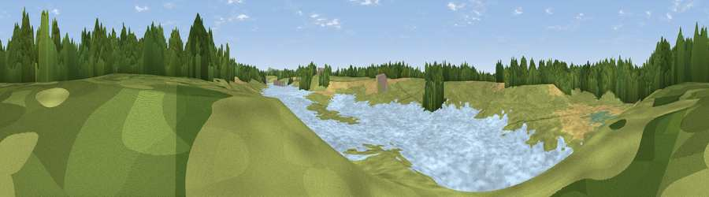

Viewpoint near Siddington
#40380 in England · top 87% of its area beats it · near SiddingtonThe view, rendered

A 360° render of this exact spot computed from the terrain model, tree cover and land cover — summer colours, afternoon light, calibrated against photographs of famous viewpoints. Real trees, hedges and buildings will differ in detail.
The panorama
Grey silhouette: terrain skyline in each direction (720 bearings, Earth curvature and refraction included). Dashed green: skyline with trees (+15 m) and buildings (+8 m) as obstacles. Blue strip: how far the ground is visible on each bearing.
Where the view opens
Wedge length = distance to the farthest visible ground on that bearing (vegetation-aware). Rings at 10, 25 and 50 km.
What fills the view
46% water · 36% grassland · 9% cropland · 8% woodland ·
Angular shares of the visible panorama (visual magnitude), not map area. Landscape diversity 0.52 (0–1 Shannon).
Key numbers
More beautiful places nearby
The staircase of upgrades: each row has a higher view potential than everything closer. Driving times are estimates from straight-line distance, calibrated against real road routing — check an actual route before setting out.
| Place | Direction | Drive | Score |
|---|---|---|---|
| Viewpoint near Over Alderley | NE · 5 km | ~12 min | 65.4 |
| Viewpoint near Alderley Edge | NNE · 6 km | ~14 min | 68.8 |
| Viewpoint near Langley | E · 11 km | ~21 min | 70.2 |
| Viewpoint near Timbersbrook | SE · 12 km | ~22 min | 74.4 |
| Viewpoint near Mow Cop | SSE · 15 km | ~27 min | 78.9 |
| Viewpoint near Mow Cop | SSE · 16 km | ~28 min | 80.2 |
| Viewpoint near Harthill | WSW · 35 km | ~54 min | 80.5 |
| White Brow | NNW · 43 km | ~63 min | 82.9 |
53.24876, -2.26889 · source: osm viewpoint · position refined by local search. Computed location — check access rights before visiting.